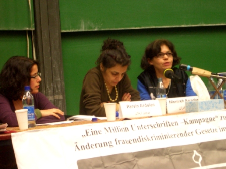

پذيرش > تریبون > مقالات > "جنبش زنان و جنبش سبز در ایران، ارتباط، موانع و راهکارها"؛ سخنرانی پروین اردلان در (...)


 "جنبش زنان و جنبش سبز در ایران، ارتباط، موانع و راهکارها"؛ سخنرانی پروین اردلان در دانشگاه بوخوم "جنبش زنان و جنبش سبز در ایران، ارتباط، موانع و راهکارها"؛ سخنرانی پروین اردلان در دانشگاه بوخوم
24 آبان 1388 - - نسخه قابل چاپ
تغییر برای برابری- کمپین در آلمان: چندی پیش در 24 اکتبر، مطابق با 3 آبان، سمیناری در دانشگاه بوخوم در کشور آلمان توسط فعالان کمپین یک میلیون امضای آلمان و فعالان جنبش سبز برگزار گردید. در این سمینار ابتدا منیره برادران و پروین اردلان به سخنرانی پرداختند و در ادامه برنامه به سوالات شرکت کنندگان پاسخ گفتند. همچنین مهمانانی چون نوشابه امیری، فاطمه حقیقت جو، عفت ماهباز و ناصر کاخساز در این برنامه حضور داشتند. ویدئو کلیپ هایی نیز از جنبش زنان و جنبش سبز در طول برنامه پخش گردید که مورد استقبال شرکت کنندگان قرار گرفت.
از نکات قابل توجه این برنامه، حضور منیره برادران، نویسنده و فعال حقوق بشر در خارج از کشور که نزدیک به یک دهه در زندانهای جمهوری اسلامی شدید ترین شکنجه ها را از سر گذرانده و اکنون خود را بخشی از جنبش سبز مردم ایران می داند، در کنار پروین اردلان، یکی از بنیان گزاران کمپین یک میلیون امضا و فعال حقوق زنان در داخل ایران بود.
سمینار با معرفی سخنرانان توسط شقایق کمالی، مجری برنامه، آغاز شد. سپس منیره برادران سخنان خود را با عنوان "سرکوب چاره ساز رژیم واقع نشد" مطرح نمود. در ادامه پروین اردلان درباره "روشها و استراتژی های جنبش زنان و ارتباط آن با جنبش سبز"صحبت کرد.
پروین اردلان:
روشها و استراتژی های جنبش زنان و ارتباط آن با جنبش سبز
پروین اردلان در آغاز، با ذکر این نکته که توانسته بعد از دو سال ممنوع الخروجی به این سوی آب پا بگذارد، خوشحالی خود را از حضور در کنار دوستان و شرکت کنندگان ابراز کرد.
وی موضوع صحبت خود را بطور کلی جنبش زنان با تمرکز بر فعالیتهای آن در تحولات اخیر دانست و تاکید کرد که با توجه به خیزش عمومی اخیر تلاش دارد که نه الزاما بر مطالبات بلکه بر استراتژی ها و روش هایی که در طول این سی سال بکار گرفته شده است، توجه کند. در این زمینه بحث او روی سه حوزه اصلی متمرکز گردید:
1. مبارزه با نظام سلسله مراتبی برای دستیابی به ارتباط افقی در جنبش
2. تمرکز زدایی از قدرت
3. ارتقاء آگاهی
پروین در مورد روش اول گفت، مبارزه جنبش برای حرکت افقی و از بین بردن نظام سلسله مراتبی نهادینه شده ای بود که نه تنها در مناسبات سیاسی بلکه در ساختارهای فرهنگی و اجتماعی نیز ریشه دوانده است. نظام سلطه ای که از طرف حکومت، خانواده، پدر و ... اعمال می شود. ما نه تنها با این سلسله مراتب در سطح حکومت و خانواده بلکه در وجود تک تک خودمان مواجه بودیم. در بررسی روابط بین زن و مرد به این نتیجه رسیدیم که خود زنان هم در درون خود چنین نظامی را بازتولید می کنند. همانطور که زنان در روابط با مردان اعتماد به نفس لازم را نداشتند درارتباط بین خود نیز اینگونه بودند.
هرچه تجربه زنان بیشتر بود و سن یا تحصیلات بالاتری داشتند، در سلسله مراتب بالاتری جای می گرفتند. برای غلبه بر این خصوصیت سعی شد که با گذاشتن کارگاههای آموزشی و تشکیل گروههای کاری در زمینه موضوعات مختلف و بحث در مورد مسائل گوناگونی چون خشونت های جنسی و خانوادگی، اعتماد به نفس از دست رفته زنان به آنان بازگردانده شده و جنبش از طریق حرکتی افقی پیش رود.
در روش دوم سعی شد که کارها در حرکتی غیر متمرکز نشر داده شود. معمولا داشتن اطلاعات و تجربه باعث تمرکز در قدرت می شد و در جنبش سعی شد با همگانی کردن آموزش و انتشار اطلاعات برای توانمند شدن تک تک اعضای جنبش این تمرکززدایی صورت پذیرد. تمرکززدایی در کنار همپوشانی فعالیتها در حوزه های مختلف، پیروزی جنبش را تضمین می کرد. قبلا چنین بود که جنبش با دستگیری رهبرانش از هم فرو می پاشید، اما با تبدیل کردن حرکت از انحصاری به عمومی و تمرکززدایی از قدرت، مانند چیزی که در کمپین اتفاق افتاد، جنبش در هر شرایطی قادر به ادامه راه خود شد.
روش سوم: در جامعه ای که هیچ حمایتی از جنبش صورت نمی پذیرد و فعالین آن تنهای تنها و در اقلیت هستند، از تمام ابزارها باید استفاده شود. در جنبش زنان هرکس سعی کرد خود یک رسانه باشد. نوشتن مقاله، ایجاد سایتهای اینترنتی زنان و ارتباط شبکه ای اولین بار در این جنبش برقرار شد. منظور از ارتقای آگاهی صرفا خواندن کتاب نبود؛ ایجاد سایت اینترنتی، رفتن به خیابان و حرف زدن با مردم، اجرای تئاترهای خیابانی زنان، ارتباط چهره به چهره و جمع آوری امضا، که نمود کامل آن را در کمپین یک میلیون امضا شاهد بودیم، مطالبات این جنبش را به شکلی ملموس تر به مردم نشان داد.
در عملی کردن این سه روش زنان تنها نبودند و مردان برابری خواه نیز همراه آنان را همراهی می کردند. البته برخی از زنان، بخاطر اینکه به شدت در ارتباط با مردان آسیب دیده و اعتماد به نفس خود را از دست داده بودند، در ابتدا تنها با زنان کار می کردند و به مرور همکاری خود را با مردان برابری خواه نیز ادامه دادند.
چگونگی کاربست روشها و استراتژی های اعمال شده در فعالیت های گوناگون جنبش زنان و طرح مطالبات جنبش
بخش بعدی سخنان پروین اردلان به چگونگی کاربست این روشها و استراتژی های اعمال شده در فعالیت های گوناگون جنبش زنان، از طرح مطالبات گرفته تا دیگر فعالیت های این جنبش، اختصاص داشت. وی با اشاره به بحث حقوق و قوانین مربوط به زنان به عنوان یکی از مباحث مطرح شده در جنبش زنان، تلاش کرد ارتباط بین مطالبه و روش را شرح دهد. وی اذعان داشت که تغییر قوانین و به طور کلی تغییر نظام حقوقی یکی از مسائل اصلی جنبش زنان ایران در صد سال گذشته و همچنین در سی سال اخیر بوده است.
در سالهای اولیه شکل گیری جنبش زنان، با وجود فعالیت های آنان برای کسب حقوق مدنی و تغیر قوانین، تنها می شد حقوق زنان را تعریف کرد، بدون اینکه امکان انتقادی نسبت به آنها وجود داشته باشد. این بحث بیشتر شکل حمایتی داشت و در سازمان های دولتی مطرح بود.
استراتژی بعدی زنان خارج کردن بحث از جنبۀ حمایتی به شناختی بود، یعنی اینکه تعریف و توجیه حقوق به عنوان امری ابدی و ازلی زیر سوال رفت و مورد تردید قرار گرفت. مهرانگیز کار و شیرین عبادی نقش مهمی در این زمینه داشتند و سعی کردند به نقد این قوانین بپردازند. نشریات زنان نیز در زمینه شناساندن این قوانین فعالیت شایان توجهی داشتند. البته در این مرحله نیز با وجود مطرح بودن نقد قوانین، کار اصلی دور زدن آنها بود. مثل بدست آوردن حق طلاق با شروط ضمن عقد.
اما با پیشرفت جنبش زنان و قدرتمند تر شدن آن، استراتژی ها نیز تغییر کرد. آموزش حقوقی همچنان ادامه داشت، اما بحث تغییرقوانین و به ویژه کنشگری زنان برای تغییر قوانین مطرح شد.
از نظر پروین، زمانی بحث از دیه، ارث و خیلی از حقوق بدیهی دیگر، خط قرمز بشمار می رفت و تابو بود. اما عملا تلاش هایی که وی از آن به "استراتژی مورچه ها" تعبیر کرد، یعنی کارهای کوچک و در مقیاسی ریز اما عملی و در عین حال هدفمند و هوشمندانه، بسیار موثر بود. فعالیت های گروه های زنان در زمینه ارتقای آگاهی، از جمله ایجاد مرکز فرهنگی زنان، تاسیس سایت های اینترنتی زنان، ورود روزنامه نگاران صاحب دیدگاه برابری جنسیتی و فعال جنبش زنان یا حساس به مسائل آن به مطبوعات وکشاندن بحث های حقوقی به روزنامه ها، فعالیت در حوزه عمومی، از برگزاری جلسات تا تجمع های خیابانی در اعتراض به نقض حقوق زنان و راه اندازی کمپین یک میلیون امضا، از مواردی بود که در سطح گسترده تری این قوانین را به چالش کشید. فعالین برابری خواه به دانشگاه ها راه یافتند و بحث تبعیض جنسیتی را در آنجا مطرح کردند و بدین ترتیب فعالیت جنبش زنان فضای آکادمیک را هم متاثر کرد.
وی در ادامه سخنانش بر این نکته تاکید کرد که آنچه هم اکنون شاهد آن هستیم، حاصل فعالیت های دامنه دار درازمدت تاریخی است که مسالمت آمیز پیش آمده و ادعای تغییر نظام سیاسی را نداشته است و تلاشش صرفا برای تغییر و بهبود شرایط اجتماعی برای افراد جامعه بوده است. از همان ابتدا با نقد پیش آمده و البته این نقد ساختارهای حقوقی و سیاسی را متاثر کرده است. وقتی حدود هفتاد نفر از فعالین کمپین را به اتهام اقدام علیه امنیت ملی بازداشت می کنند نشانگر اینست که اتفاقات دیگری رخ داده است.
به اعتقاد پروین اولین ضربه خورده های سی سال اخیر زنان بوده اند. همه کسانی که وقتی حجاب را بر سر زنان کردند، دیدند و سکوت کردند و نیز خود زنانی که آن را پذیرفتند، در کنار دیگرانی که قوانین ناعادلانۀ جنسیتی و حقوقی را بر زنان آوار کردند، همه و همه باعث شدند که ما سالها به عقب برگردیم و اکنون تمام سعی مان اینست که این عقب ماندگی را جبران کنیم. با آغاز انقلاب و یک ماه پس از آن این آسیب ها گریبانگیر زنان شد و جنبش زنان برای از بین بردن آنها مبارزه را آغاز کرد. این مبارزات یک شبه بوجود نیامده اند، بلکه جنبش گسترده و دامنه داری بوده اند که بر حوزه های مختلف تاثیر گذاشته اند.
پروین به عنوان یکی از فعالین جنبش زنان، مهمترین افتخار و پیروزی این جنبش را در اندوختن تجربه های گرانبهایی دانست که در خدمت جنبش سبز قرار داده و در حقیقت سنگ بنای آن را ایجاد کرده است: تجاربی مثل افقی بودن، شبکه ای عمل کردن و نداشتن رهبری، که اکنون در جنبش سبز مطرح است را جنبش زنان سال ها تجربه کرده و بدون ادعا برایش مبارزه کرده است. امروز برای جنبش زنان افتخار بزرگی است که جنبش کنونی به آموزه ها و استراتژی های آن رسیده است. جنبش زنان به عنوان جنبشی دموکراتیک خواه تلاش کرده که این روشها را نه تنها در ارتباط با مردم و حکومت، که درون خودش به کار گیرد و پیش برود، یاد بگیرد و یاد بدهد و هنوزهم در این عرصه فعال است.
سبز نمادیست برای اعلام دموکراسی خواهی مردم ایران به سراسر دنیا. اما باید آگاه بود که این جنبش رنگین کمانی است؛ یعنی جنبش دانشجویی، کارگری، زنان و ... در آن نقش داشته اند
مسئله دیگری که پروین مطرح نمود، فعالیت اعضای جنبش زنان در جنبش سبز بود. او جنبش سبز را جنبش دموکراسی خواهی نامید و معتقد بود که سبز نمادیست برای اعلام این دموکراسی خواهی به سراسر دنیا. اما باید آگاه بود که این جنبش رنگین کمانی است؛ یعنی جنبش دانشجویی، کارگری، زنان و ... در آن نقش داشته اند. آنها صداهای مختلفی بودند که با هم رشد و حرکت کرده و بالا آمده اند. به اعتقاد پروین، اگر از جنبش سبز سخن می گوییم، از حرکتی صحبت می کنیم که در ایران کنونی با شکست احزاب و پیروزی جنبشها شکل گرفته است. حزب فی نفسه بد نیست. متاسفانه سازوکارهای حکومتی و قوانین موجود امکان فعالیت مستقل احزاب را بر نمی تابد. چیزی که در ایران به اسم حزب داریم به هیچ وجه با معیارهای استاندارد جهانی برای تعریف یک حزب، بخصوص ازجهت مشارکت در قدرت سیاسی منطبق نیست. در ایران یک حزب سیاسی امکان شکل گیری ندارد و شبه احزاب حکومتی و دولتی که به وجود آمدند، عملا خودمحور و بی ارتباط با جامعه بوده اند. اما جنبش های اجتماعی بخاطر فقدان نهادهای مدنی مانند احزاب و به بن بست رسیدن حرکت های دیگر، تقویت شده و چون می توانند با همۀ مردم ارتباط برقرار کنند، تاثیر بسزایی در سازمان دهی اعتراضات مردمی داشته اند.
به نظر پروین بهره گیری از الگوهایی که در جنبش زنان مورد استفاده قرار گرفته و هم اکنون نیز به آنها عمل می شود برای ادامه جنبش سبز حیاتی است. باید این جنبش بطور مستمر خود را نقد کرده، چند صدایی و چند رنگی بودن خود را حفظ کند.
او معتقد است که صدای دموکراسی خواهی سالها دیده و شنیده شد اما باور نشد و به اسم صدای دولتها از آن نام برده شد. اما هم اکنون این صدا با نام صدای مردم ایران در سراسر جهان باور شده است.
مسئلۀ دیگری که پروین بدان اشاره کرد، بحث حضور یا عدم حضور زنان در جنبش سبز بود. او با مقایسه انقلاب 1357 با جنبش کنونی گفت که اکثر مردم لااقل در یوتیوب و فیلم هایی که می آمد حضور گسترده زنان را دیدند . اتفاقا در این جنبش، زنان برخلاف انقلاب پنجاه و هفت، بیشتر پشت سر مردان و جدا از آنان نبوده اند، بلکه پا بپای آنان حرکت می کردند و گاهی آنان را به دنبال خود می کشیدند. با مطالبات خود به میدان آمده بودند و تحلیل جنسیتی از کار خود داشتند. مادران عزادار از دل این حرکت بیرون آمدند و هم آنانند که اکنون در شبکۀ کمپین، مادران کمپین و فعالیت های خیابانی حضور دارند. در این جنبش ترکیب جنسیتی سابق شکسته شد و آن نظام سلسله مراتبی از بین رفت. این مسئله را حتی در نماز جمعه مشاهده کردیم.

پرسش و پاسخ
پروین اردلان در پاسخ به این سوال که با توجه به سرکوب تمام عیار حکومت، استراتژی جنبش زنان در آینده چه خواهد بود، گفت که ما به سرکوب عادت داریم. سالهایی که ما را بازداشت می کردند، سالهایی بود که حتی از سوی فعالان جنبش زنان زیر فشار بودیم که چرا هزینۀ زیادی به جنبش تحمیل می کنیم. ولی ما برای حقوق مدنی خودمان تلاش می کردیم و سعی می کردیم با فعالیتهای مان جامعه را نیز دموکراتیزه کنیم. امضا جمع کردیم، به خاطرش به زندان رفتیم، اما وحشت اوین را نیز شکستیم. در فضای رعب و وحشت، وحشت شکنی امریست مهم که این را جنبش زنان انجام داد. ما روزهای تلخی داشتیم؛ روزهایی که فعالان دستگیر می شدند و کسی به التماس های ما برای کمک پاسخ مثبت نمی داد. ولی روزهای خوبی از پی آن آمد. خانواده ها در حمایت از فرزندانشان وارد شدند؛ مثلا پدری که دخترش را بدلیل حمایت از کمپین کتک زده بود به پشتیبانی از او برخاست. خیلی از اقتدارها شکسته شد و این اتفاق شیرینی بود.
ظاهر ساکت جنبش زنان به معنای عقب نشینی و عدم فعالیت نیست
اکنون دیگر جامعه عملا به صدا در آمده و این، یک یا دو جنبش نیست، بلکه تک تک مردمند که فریاد می زنند. ظاهر ساکت جنبش زنان به معنای عقب نشینی و عدم فعالیت نیست. انگار باید همیشه پلاکاردی در دست داشته باشیم و بگوییم ما اینجا هستیم. ما بودیم؛ در این جنبش همه بودند. همه حضور داشتند، با مطالبات گوناگون و البته هویتهای خاص. مهم اینست که همه در یک حرکت دموکراتیک حضور داریم اما به این معنا نیست که مطالبات مان به حاشیه رفته است. بحث این نبود که من "زنم". این اتفاق افتاده بود و گذشت. ما با شکلی از حرکت صیقل خوردۀ سی ساله مواجهیم که دارد هر روز سبز می شود؛ مثل قارچ هایی که باران می خورند و این زیباست و بهترین لحظاتی است که ما تجربه کرده ایم.
سوال دیگر از پروین این بود که آیا جمهوری اسلامی به این استراتژی روی نیاورده که اپوزیسیون را به خارج از کشور بفرستد اگر نتواند آنان را بکشد؟ وی در پاسخ گفت که این بستگی به فعالیت اپوزیسیون دارد. اگر جایی برای کار در کشور نباشد، خیلی ها به خارج از کشور می روند . البته با گسترش تکنیک های ارتباطی و اینترنت این استراتژی حکومت بی ثمر است. و در واقع مرز جغرافیایی چندان تعیین کننده نیست. ما همیشه به این فکر کرده ایم که کار درست را انجام دهیم نه این که دیگران یا حکومت چه می خواهد . من شخصا برای انجام کارهای دیگری به خارج از کشور آمده ام و حتما به ایران باز خواهم گشت. در حال حاضر حاکمیت از همه ابزارها در این زمینه استفاده می کند. شاید به خیلی ها اجازۀ خروج از کشور می دهد ولی همزمان خیلی ها را هم ممنوع الخروج می کند. خیلی ها هم با اینکه در داخل کشور هستند، مثل آقای سلطانی، اجازۀ فعالیت ندارند و با اینکه در خارج از کشور بسر نمی برند، بنوعی تبعیدی شمرده می شوند.
اگر ما می خواهیم تغییری را ایجاد کنیم، آن را همزمان از خودمان، خانواده مان، شبکۀ اجتماعی مان، شبکۀ دوستانمان و نیز از حکومت مان شروع کنیم و توجه داشته باشیم که این مسئله اصلا یک طرفه نیست و نباید آن را اولویت بندی کرد
پروین در جواب یکی دیگر از شرکت کنندگان که پرسید آیا بهتر نیست بجای جامعه مردسالار، جامعه دین سالار بگوییم، گفت وقتی ما از جامعۀ مردسالار سخن می گوییم، منظورمان جامعه ایست که در آن دین ، حکومت و مردم نیز این ویژگی مردسالارانه را دارند. اینگونه نیست که ما مثلا ما آدم خوبی باشیم که در حاشیه ایستاده و مورد ظلم واقع می شود. مثلا وقتی چند سال پیش از پل چوبی در خیابان انقلاب به سمت میدان امام حسین می رفتم، جمعیت بسیار زیادی را دیدم که با من هم مسیر بودند. وقتی پرسیدم چه خبر است، گفتند قرار است کسی اعدام شود. من مسیرم را عوض کردم، حال بدی داشتم و ناخودآگاه گریه می کردم. با خود فکر می کردم که گرچه حکومت و ساختار بسیار مهم اند، اما ما هم بدبختانه به برخی از رفتارها عادت می کنیم. به این فکر می کردم که ما چه راحت می توانیم آدم بکشیم، بدون اینکه خود، حکومتی باشیم و این بسیار وحشتناک بود. اما اکنون خیلی زیباست که می بینیم بسیاری از فعالان و مادران کمپین و مادران عزادار و دیگر فعالین جنبش زنان از ناراحتی به خود می پیچند که قرار است یکی اعدام شود. چهارشنبه ها تا صبح جلوی اوین تحصن می کنند تا جلوی اعدام یکی دیگر را بگیرند. سال ها طول کشید که بگوییم با اعدام مخالقیم. ما در کمپین برای تغییر سن کیفری و جلوگیری از اعدام کودکان فعالیت می کنیم. ولی در حال حاضر بسیاری از افراد اصلا به این امر اعتقادی ندارند و حتی حاضر نیستند این تغییرات رخ دهد. متاسفانه ما در این ساختار شکل می گیریم و خودمان هم این ساختار را بازتولید می کنیم. بدین دلیل است که من اعتقاد دارم اگر می خواهیم تغییری را ایجاد کنیم، آن را همزمان از خودمان، خانواده مان، شبکۀ اجتماعی مان، شبکۀ دوستانمان و نیز از حکومت مان شروع کنیم و توجه داشته باشیم که این مسئله اصلا یک طرفه نیست و نباید آن را اولویت بندی کرد.
نگذاریم مشکلاتی که برای ما پیش آمد دوباره تکرار شود و نسل بعدی را از بین ببرد
سوال بعدی از پروین این بود که آیا کمپین به تغییر قوانین تحت یک حکومت مذهبی واقعا اعتقاد دارد یا این تنها یک تاکتیک است، که او پاسخ داد، وقتی ما بحث تغییر قوانین را شروع کردیم حتی اجاره نیافتیم ده دقیقه در خیابان بایستیم. هفتاد نفر از ما بازداشت و دادگاهی شدند. آنان جلوی کمترین ارتباط ما با مخاطبان مان را در خیابان گرفتند. به نظر می رسد که در یک حکومت تمامیت خواه نمی توان بسیاری از کارها را انجام داد، اما با ایجاد خواسته و گفتمانی عمومی و جمعی در سطح جامعه و ارتقای آگاهی می توان خیلی کارها کرد. کاری که در ایران اتفاق افتاد این بود. من باور نداشتم که با یک میلیون امضا میتوانیم قوانین را تغییر دهیم. البته هنوز هم این امضاها به یک میلیون نرسیده است. یعنی در این کشور هفتاد میلیونی هنوز یک میلیون نفر پیدا نکرده ایم، بگذریم از اینکه خیلی ازامضاها از خارج از کشور بوده است و حتی در میان خارج نشینان نیز بسیاری به خاطر ترس از ایجاد مشکل به هنگام سفر به ایران ما را در امضا یاری نکردند. این خیلی تلخ است. من شخصا دچار توهم بودم چون که مطمئن بودم یک میلیون امضا را عرض یک ماه جمع خواهیم کرد. در کشور هفتاد میلیونی این یک فاجعه است. سه سال گذشته و ما هنوز به یک میلیون نرسیده ایم، گرچه در حوزه آگاهی رسانی فعال بوده ایم. البته موانع حکومتی نیز بی تاثیر نبوده اند؛ اما این موضوع از وظیفه تک تک ما چیزی کم نمی کند. همه اینها ناشی از عدم شناخت خودمان و جامعه مان بوده است. بدین ترتیب اعتقاد پیدا کردم که ما باید ارتقاء آگاهی در حوزه شبکه ای را در درجۀ اول از خودمان شروع کنیم تا بلایی که بر نسل ما در انقلاب پنجاه و هفت آمد، دوباره تکرار نشود و نسل بعدی را از بین نبرد.
مناسبات مردسالارانه و بازتولید مداوم آن
از دیگر سوالها، اقدام کمپین برای جلوگیری از روابط مرد سالارانه در میان زنان بود، با توجه به اینکه این روابط تنها از طرف مردان تولید نمی شوند بلکه زنان نیز در بازتولید آن نقش دارند. از نظر پروین مردان هم در جامعه مردسالار قربانی این ساختارند و این تنها زنان نیستند. برای مردان ما هم این حس بدیست که چون مردند باید در جامعۀ ایران حقوق بخصوصی داشته باشند. بخاطر تفاوت جنسیت از حقوق متفاوتی برخوردار بودن، برای خود مردان نیز توهین آمیز است. مردان برابری خواه در کمپین از بطن این حرکت بیرون آمدند و سعی کردند این بحث را مطرح کنند. متاسفانه برخی به آنان انگ زن ذلیل زدند و در زندان ها آنان را بخاطر دفاع از حقوق زنان تحت آزارمضاعف قرار می دادند. این یک روی مسئله بود اما روی دیگر، بازتولید این ساختار است. در بسیاری از موارد زنان نیز همان رفتار مردانه را از خود نشان می دادند. چون برخی از موقعیتها در جامعه به مردان تعلق دارد، وقتی زنی آن موقعیت را بدست می آورد، آن ساختار را بازتولید کرده و همان رفتار را نسبت به بقیه دارد. کاری که ما کردیم، بازشناسی این موقعیت ها، نوشتن در مورد آن، تشکیل کارگاه های آموزشی و تحلیل این بحث ها و نقد درونی آن بود. این نقد درونی هنوز نیز ادامه دارد.
بهتر است بگوییم چه کمکی به همدیگر می توانیم بکنیم
نقش فعالین خارج از کشور در کمک به جنبش سبز آخرین سوال بود که پروین در پاسخ به آن اظهار داشت، از آنجا که ما به کار افقی قائلیم، بهتر است بگوییم چه کمکی به همدیگر می توانیم بکنیم. با توجه به امکانات زیادی که در خارج از کشور وجود دارد، کارهایی را اینجا می توان انجام داد که در ایران با توجه به امکانات محدود و فضای بسته انجام ناپذیر است. نسل جدیدی اینجا پا گرفته که توانمندی های زیادی دارد. می توانیم با کمک هم شبکه ها را گسترده تر و غنی تر پیش ببریم. ما این شبکه ها در جنبش زنان از سال ها پیش ترتیب داده ایم . نمونه خوب آن در سطح کوچکتر بنیاد پژوهش های زنان بود. باید حلقه های ارتباطی را قویتر کرد. اگر در داخل ایران مشکلی برای حرکت هست، می توان از این سو کمک گرفت. نباید ایستاد و منتظر بود که در ایران کاری انجام شود تا اینجا آن را منعکس کنیم. اگر شعارهایی را در شرایط محدود ایران نمی توان مطرح کرد، اینجا می توان آن را ارتقا داد. ما در کمپین کارانتقال اطلاعات را تجربه کرده ایم. کمپین را از زنان مراکشی آموختیم و زنان افغانستان از ما آموختند. در این زمینه گسترش کار شبکه ایی بسیار مهم است و ارتباط نسل ها را از این طریق می توان حفظ کرد. می شود برای ایران ترجمه کرد. شما با دانش جدید آشنا هستید. آنان بخاطر حضور در آن جغرافیا به یکسری اطلاعات دسترسی دارند و شما هم در این سو. این اطلاعات را باید مبادله کرد.
مسئله دیگر کمک به دانشجویان ستاره دار است. مفهوم ستاره یاد آور آلمان نازی و نشان دارکردن یهودی ها، همجنس گرایان، مخالفان و... است. اکنون این داغ بر کارنامه دانشجویان فعال قرار گرفته و آنان را از حق تحصیل محروم کرده است. می توان دانشگاههای خارج را تشویق و متقاعد کرد که هریک تنها یک دانشجوی ستاره دار را بپذیرند. این حرکت، هم سمبلیک هم مردمی و هم جنبشی است و نیز نشانه همبستگی با دانشجویان ایران است. ایجاد و گسترش شبکه ارتباطی با دانشجویان آلمانی و خارجی صدای جنبش دانشجویی ایران را نه تنها رساتر که پر قدرت ترهم می کند. این مسئله را بیش از همه به پاس فعالیت های دانشجویان محروم از تحصیل و به ویژه شیوا نظرآهاری مطرح کردم که ستاره دار شد و ستاره هایش را بر سرش بست و در جنبش دموکراسی خواهی این داغ ننگ را با افتخار به مردم ایران و جهانیان نشان داد و در کنار فعالین جنبش سبز فریاد دموکراسی خواهی سر داد.
ارسال به
بالاترین
،
توییتر
،
فریندفید
،
فیسبوک
در همين بخش :
 دهمین دورۀ مراسم تندیس صدیقه دولت آبادی ۱۳۹۲ دهمین دورۀ مراسم تندیس صدیقه دولت آبادی ۱۳۹۲
کارت پستالهایی به بهانهی هشت مارس و به یاد همهی مبارزین راه برابری
بیانیه بیش از 350 تن از مدافعان حقوق زنان به مناسبت روز جهانی زن؛ زنان هر روز فرودستتر میشوند
لباسی که برای تن ما دوخته اند! /اعظم بهرامی
چالشها و چشمانداز فعالیت مدنی زنان
ديگر بخش ها :
طرح یک میلیون امضا
|
مقالات
|
سایت نوشته ها
|
اخبار
|
گزارش كمپين
|
گفت و گو
|
علیه سکوت
|
كوچه به كوچه
|
نامه های شما
|
گزارش ویژه
|
گفتگو با اعضا
|
ویژه سالگرد کمپین
|
تصویر برابری
|
دل آرام علی
|
تریبون
|
مقالات
|
تاریخ شفاهی
|
خارج از چارچوب
|
کتابخانه
|
درباره کمپین
|
کمپین در شهرها
|
کمپین در بند
|
صدای تغییر
|
ویژه 22 خرداد
|
لایحه حمایت از خانواده
|
گالری
|
عشا مومنی
|
امیر یعقوبعلی
|
خدیجه مقدم
|
راحله عسگری زاده و نسیم خسروی
|
پروین اردلان،جلوه جواهری، مریم حسین خواه، ناهید کشاورز
|
زینب پیغمبرزاده
|
سعیده امین، سارا ایمانیان، محبوبه حسین زاده، ناهید کشاورز و همایون نامی
|
احترام شادفر
|
نسیم سرابندی زاده،فاطمه دهدشتی
|
وبلاگ مهمان
|
پرونده خرم آباد
|
دستگیری ها
|
مریم مالک
|
پرستو اللهیاری
|
مهرنوش اعتمادی
|
سمیه رشیدی
|
Other Languages
|
همراهان
|
«فراخوان کمپین ده روز با بهاره هدایت»
| English
|